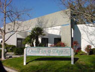
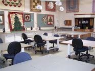

Address
Quilt in a Day1955 Diamond Street
San Marcos, CA
92078
Telephone
(760) 591-0929Hours
Mon - Wed: 9am - 8pmThurs & Fri: 9am - 5pm
Sat: 9am - 4pm
Sun: 11am - 4pm
Website
www.quiltinaday.com
Quilt in a Day
Located in San Marcos, California (about a half hour north of San Diego), the Quilt in a Day store is a friendly, creative environment for your quilting and shopping pleasure. The store carries a wide selection of 100% cotton quilting fabrics, battings, notions, patterns, and of course, all of the Quilt in a Day book titles, videos and specialty rulers. The friendly and helpful staff is always happy to help you pick the perfect fabrics for your quilt. Register for a class, or attend a fun "Demo Day" with entertainment, flying scraps and refreshments. The San Marcos location also holds the video studio where the Quilt in a Day program is taped.
Map & Directions
View Larger Map
- Home
- Prize Winners
- Webmaster
- © Southern California Quilters Run 2016-17